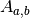
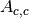

ApplyPaalmanPingsCorrection dialog.
Table of Contents
| Name | Direction | Type | Default | Description |
|---|---|---|---|---|
| SampleWorkspace | Input | MatrixWorkspace | Mandatory | Name for the input Sample workspace. |
| CorrectionsWorkspace | Input | WorkspaceGroup | Name for the input Corrections workspace. | |
| CanWorkspace | Input | MatrixWorkspace | Name for the input Can workspace. | |
| CanScaleFactor | Input | number | 1 | Factor to scale the can data |
| CanShiftFactor | Input | number | 0 | Amount by which to shift the container data |
| OutputWorkspace | Output | MatrixWorkspace | Mandatory | The output corrections workspace. |
| RebinCanToSample | Input | boolean | True | Enable or disable RebinToWorkspace on CanWorkspace. |
Applies absorption corrections calculated in the Paalman and Pings
absorption factor format. The various partial absorption factors are
denoted as  where the subscript  denotes the
component the neutron is scattered from and
denotes the
component the neutron is scattered from and  denotes the
component where the neutron is absorbed. The various partial
absorption factors, and what their names must contain in the
denotes the
component where the neutron is absorbed. The various partial
absorption factors, and what their names must contain in the
CorrectionsWorkspace group are detailed in the table below. If any
of the partial absorption factors are not supplied, they are assumed
to be one.
| Symbol | Scatter From | Absorbed By | Workspace Name |
|---|---|---|---|
 |
sample | sample | ass |
 |
sample | sample and container | assc |
|  | container | container | acc |
 |
container | sample and container | acsc |
This algorithm can be used to apply absorption corrections calculated with either the CylinderPaalmanPingsCorrection and FlatPlatePaalmanPingsCorrection algorithms as well as the legacy indirect calculate corrections routine, providing that the sample and container are first converted to wavelength and the corrections are interpolated to match the sample as demonstrated in the example below.
All workspaces are converted into wavelength using the appropriate
mode of ConvertUnits. Then
CanShiftFactor is added to wavelength of the CanWorkspace.
Then one of the two following equations is performed
(dependent on the number of correction factors provided):


The variables that are not defined above are
| Variable | Parameter Name | Default |
|---|---|---|
 |
OutputWorkspace |
N/A |
 |
SampleWorkspace |
N/A |
 |
CanWorkspace |
0 |
 |
CanScaleFactor |
1 |
CorrectionsWorkspace |
1 |
The workflow diagrams below are another representation of the equation above with the simplifications for when the various terms are missing or one.
Depending on the input workspaces and correction factors provided to the algorithm it may operate in one of four ways, each of which is described on a separate workflow diagram.
In the case where only a container workspace and no correction factors are provided.

In the case where only correction factors and no container workspace is provided.

In the case where a container workspace, along with the
and  factors are provided.
factors are provided.

In the case where a container workspace, along with the ,
and factors are provided.

Example: using with legacy indirect corrections data
# Load the sample and can
sample_ws = Load('irs26176_graphite002_red.nxs')
can_ws = Load('irs26173_graphite002_red.nxs')
# Convert sample and container workspaces to wavelength
sample_ws = ConvertUnits(InputWorkspace=sample_ws,
Target='Wavelength',
EMode='Indirect',
EFixed=1.845)
can_ws = ConvertUnits(InputWorkspace=can_ws,
Target='Wavelength',
EMode='Indirect',
EFixed=1.845)
# Load the corrections workspace
corrections_ws = Load('irs26176_graphite002_cyl_Abs.nxs')
# Interpolate each of the correction factor workspaces to match the
# binning of the sample
# Required to use corrections from the old indirect calculate
# corrections routines
for factor_ws in corrections_ws:
SplineInterpolation(WorkspaceToMatch=sample_ws,
WorkspaceToInterpolate=factor_ws,
OutputWorkspace=factor_ws,
OutputWorkspaceDeriv='')
corr = ApplyPaalmanPingsCorrection(SampleWorkspace=sample_ws,
CorrectionsWorkspace=corrections_ws,
CanWorkspace=can_ws)
print('Corrected workspace has {} spectra over {} bins'.format(corr.getNumberHistograms(), corr.blocksize()))
print('Type of correction applied: {}'.format(corr.getRun()['corrections_type'].value))
Output:
Corrected workspace has 10 spectra over 1905 bins
Type of correction applied: sample_and_can_corrections
Categories: AlgorithmIndex | Workflow\MIDAS
Python: ApplyPaalmanPingsCorrection.py (last modified: 2019-12-12)